ArceOS tutorial book
自己动手写组件化操作系统：自顶向下+自底向上的方法
本教程假设读者了解操作系统基本概念和原理，具有常用的 Linux 系统使用经验，并且会使用 Rust 语言编写简单程序。 如果读者不熟悉操作系统和 Rust 语言，希望以自底向上方法从零构建操作系统，[rCore Tutorial Book v3] 可能是更好的选择。
如果你准备好了，让我们开始吧！
概述
本教程编写的思路与目标：实验结合理论
操作系统概述
OS 在计算机体系结构中的位置和作用
OS 的主要模式
操作系统内核是计算机系统的核心，负责管理硬件资源，包括处理器、内存、磁盘存储等，并为运行在操作系统上的应用程序提供一组接口（系统调用）来访问这些资源。操作系统内核架构是指操作系统内核设计和实现的方式。以下是几种常见的操作系统内核架构：
宏内核（Monolithic Kernel）
宏内核将操作系统的所有服务，如设备驱动、文件系统、网络协议栈和进程调度等都集成在一个大的内核中，运行在内核空间。这种设计使得各个模块可以直接相互通信，因此性能较好。然而，宏内核的缺点是任何一个故障都可能导致整个系统崩溃。另外，由于所有模块都紧密耦合在一起，修改或添加功能也比较困难。Linux 和 UNIX 就是采用宏内核设计的例子。
微内核（Micro Kernel）
微内核只保留最基本的、必要的服务在内核空间，如进程间通信、内存管理和基本的I/O操作等，其他高级服务例如设备驱动、文件系统等都运行在用户空间。这样的设计使得系统更加稳定，因为即使一个服务出现故障也不会影响到整个系统，同时也使得系统更易于维护和扩展。但在性能方面，由于需要频繁地进行用户空间与内核空间之间的上下文切换，微内核的性能通常低于宏内核。Minix 和 QNX 是采用微内核设计的例子。
单内核（Unikernel）
单内核是一种新兴的内核架构，它将应用程序和内核捆绑在一起形成一个单一的可执行映像，该映像可以直接运行在虚拟机或裸机上。单内核适用于云计算和物联网环境，它的优点是体积小，启动快，但对开发者的编程要求较高。单内核（Unikernel）架构有如下特点:
-
单一镜像：将应用程序代码与操作系统核心功能合并到一个单一的可执行镜像中。这个镜像包含了应用程序所需的所有组件，包括网络协议、文件系统和设备驱动等。因此，每个 Unikernel 实例都是一个独立的、自包含的单元。
-
定制性：根据应用程序的需求进行定制，只包含必要的组件和库。这种定制性减少了不必要的功能和复杂性，在资源受限的环境下更加高效。
-
轻量级：相比传统操作系统，内存占用更小，启动时间更短。由于只包含必要的组件，它可以更好地适应嵌入式系统、虚拟化环境和云计算平台等资源受限的场景。
-
性能效率：通过减少不必要的软件层和系统调用，减少了性能开销，使得应用程序可以更高效地运行。
总的来说，Unikernel 是一种精简、定制化的操作系统构建技术，旨在提供更高的性能、更低的资源消耗和更强的安全性。它适用于各种场景，包括嵌入式系统、云计算平台和容器化环境等。
为了更好的理解 Unikernel，我们对 Unikernel（单内核）、 Micro Kernel（微内核）、Monolithic Kernel（宏内核）进行对比。
| Unikernel（单内核） | Micro Kernel（微内核） | Monolithic Kernel（宏内核） | |
|---|---|---|---|
| 架构 | 将应用程序、操作系统内核、必要的组件紧密集成在一起，以创建一个高度定制化和最小化的镜像。 | 采用模块化设计，将操作系统的核心功能最小化，额外的功能和服务实现为用户空间的服务模块。 | 将各种功能和服务集成到一个单体内核中，如进程管理、内存管理、文件系统、网络协议栈等。 |
| 功能分配 | 包含应用程序所需的最小化操作系统功能和库。 | 包含基本的操作系统功能，如进程管理、内存管理和进程间通信，而其他功能如文件系统、网络协议栈等被实现为用户空间的服务模块。 | 包含大量的功能和服务，这些功能和服务直接运行在内核空间，具有较高的集成性和内核级别的访问权限。 |
| 性能 | 镜像小，启动速度快，没有额外的组件和系统调用，具有更高的性能和较低的资源消耗。 | 将功能模块化并移至用户空间，其性能相对较低。模块之间需要进行消息传递和系统调用，会引入额外的开销。 | 内核和服务的紧密集成，有较高的性能 |
| 特权级 | 同一地址空间同一特权级。 | 只有进程管理和进程间通信在内核态 | 所有硬件操作在内核态 |
| 代表系统 | ArceOS、Unikraft、MirageOS、IncludeOS | QNX、MINIX、L4微内核系列 | Linux、Windows |
历史上各阶段的代表性 OS 及其特点
ArceOS 概述
背景
计算机发展到今天，新型硬件层出不穷，应用对性能和安全的需求也越来越⾼。而作为底层支撑的操作系统却发展滞后，无论是以 Linux，Windows 为代表的通用操作系统，还是如 RT-Thread、FreeRTOS 等实时操作系统，都存在着各种各样的问题，很难满足硬件和应用对操作系统的发展需求。

⽬前操作系统存在的主要问题：
-
安全性问题，主要是内存安全，各种漏洞越来增多；

-
⾯向通⽤场景，现在的操作系统大多是通用操作系统，为了适应各种各样的场景，需要要做多方面的权衡，从而导致操作系统越来越臃肿、笨重；
-
有些操作系统虽然采用了一些组件化设计思想，但是组件之间的耦合度高，导致组件难以重⽤；

-
基于现有的复杂的操作系统，开发应用的门槛较高，复杂性也越来越高。
目标与特点
ArceOS 是一个实验性的，基于 unikernel 的组件化操作系统， 主要面向的领域是 AIoT，即人工智能+物联网领域，对于安全性、高性能和应用的要求比较高。在设计时，采用 Rust 语言开发操作系统内核，通过结合软硬件协同优化达到如下目标：
- 安全（基于 Rust 语言）
- 高并发支持和高吞吐量（异步协程）
- 实时性（用户态中断机制）
- 支持 POSIX 接口（兼容生态）
- 内核模块可按应用场景开发（便捷精简开发）
具有以下特性：
- 组件化：以组件粒度组装适应各种应用需求的操作系统。
- 以应用为中心(unikernel)：面向应用，依照依赖链，选出最小的必要组件集合，构造操作系统。
- 组件区分系统相关和系统无关：识别具有通用功能的组件，可以为其它操作系统所复用。
- 利用 Rust 机制：以 crate 对应组件，trait 对应接口，dependencies+features 的方式对组件进行组织。
总体结构
ArceOS 从架构上包含如下几层：
- ArceOS crates，通用的基础库，系统无关，为 modules 实现提供支持
- ArceOS modules，系统相关，只为 ArceOS 服务的组件库
- ArceOS API，ArceOS 对应用层提供服务的 API，包括面向 RUST 应用程序的 API 、面向 C 应用程序的 API
- ArceOS ulib
- User AppS

ArceOS 从形态上具有以下特点：
- 单应用
- 单地址空间
- 单特权级
实验设计与准备
概述
实验引导原理的学习方法：一步一步构建组件化UnikernelOS，每一步把理论介绍与实验过程结合起来，与通过实践理解OS原理，掌握一定的OS构造方法。
Unikernel对用户表现为单应用，OS则以库的形式嵌入应用。从两个视角介绍实验过程：
-
应用层：介绍一个应用迭代升级的过程，每次增加功能和增强特性。
-
OS层：对应每次的应用迭代，OS需要扩展的功能组件，和该组件的原理与实现。
应用选择mini-redis-server，该应用完成时的目标；相应的OS具备的功能。
图：双层总体流程图 箭头连接<预留img2_1.png>
预备知识
-
Rust系统编程
-
RISC-V体系结构与实验
-
MiniRedis的基本功能与客户端使用，基于std标准库
环境配置
OS 环境配置
目前实验内容可支持在 Ubuntu操作系统 上进行操作。
对于 Windows10/11 的用户可以通过系统内置的 WSL2 虚拟机（请不要使用 WSL1）来安装 Ubuntu 22.04，步骤如下：
-
升级 Windows 10/11 到最新版（Windows 10 版本 18917 或以后的内部版本）。注意，如果不是 Windows 10/11 专业版，可能需要手动更新，在微软官网上下载。升级之后， 可以在 PowerShell 中输入
winver命令来查看内部版本号。 -
「Windows 设置 > 更新和安全 > Windows 预览体验计划」处选择加入 “Dev 开发者模式”。
-
以管理员身份打开 PowerShell 终端并输入以下命令：
# 启用 Windows 功能：“适用于 Linux 的 Windows 子系统” >> dism.exe /online /enable-feature /featurename:Microsoft-Windows-Subsystem-Linux /all /norestart # 启用 Windows 功能：“已安装的系统虚拟机平台” >> dism.exe /online /enable-feature /featurename:VirtualMachinePlatform /all /norestart # <Distro> 改为对应从微软应用商店安装的 Linux 版本名，比如：`wsl --set-version Ubuntu 2` # 如果你没有提前从微软应用商店安装任何 Linux 版本，请跳过此步骤 >> wsl --set-version <Distro> 2 # 设置默认为 WSL 2，如果 Windows 版本不够，这条命令会出错 >> wsl --set-default-version 2 # 启用运行 WSL 并安装 Linux 的 Ubuntu 发行版所需的功能，根据向导设置用户名和密码 >> wsl --install
注解👉
由于时间问题我们主要在 Ubuntu22.04 on x86-64 上进行了测试，后面的配置也是基于此环境进行。你也可以在其他 Linux 发行版上进行实验，基本上不会出现太大的问题。如果遇到了问题的话，请在本节的讨论区中留言，我们会尽量帮助解决。
Rust 开发环境配置
首先安装 Rust 版本管理器 rustup 和 Rust 包管理器 cargo，这里我们用官方的安装脚本来安装：
curl https://sh.rustup.rs -sSf | sh
如果通过官方的脚本下载失败了，可以在浏览器的地址栏中输入 https://sh.rustup.rs 来下载脚本，在本地运行即可。
如果官方的脚本在运行时出现了网络速度较慢的问题，可选地可以通过修改 rustup 的镜像地址（修改为中国科学技术大学的镜像服务器）来加速：
export RUSTUP_DIST_SERVER=https://mirrors.ustc.edu.cn/rust-static
export RUSTUP_UPDATE_ROOT=https://mirrors.ustc.edu.cn/rust-static/rustup
curl https://sh.rustup.rs -sSf | sh
或者使用 tuna 源来加速 参见 rustup 帮助：
export RUSTUP_DIST_SERVER=https://mirrors.tuna.edu.cn/rustup
export RUSTUP_UPDATE_ROOT=https://mirrors.tuna.edu.cn/rustup/rustup
curl https://sh.rustup.rs -sSf | sh
或者也可以通过在运行前设置命令行中的科学上网代理来实现：
# e.g. Shadowsocks 代理，请根据自身配置灵活调整下面的链接
export https_proxy=http://127.0.0.1:1080
export http_proxy=http://127.0.0.1:1080
export ftp_proxy=http://127.0.0.1:1080
安装完成后，我们可以重新打开一个终端来让之前设置的环境变量生效。我们也可以手动将环境变量设置应用到当前终端，只需要输入以下命令：
source $HOME/.cargo/env
接下来，我们可以确认一下我们正确安装了 Rust 工具链：
rustc --version
可以看到当前安装的工具链的版本。
rustc 1.70.0 (90c541806 2023-05-31)
警告⚠️
目前适用于操作系统实验开发的 rustc 编译器的版本为 1.73.0，你可以选择更新版本的 rustc 编译器。但注意只能用 rustc 的 nightly 类型的版本。
可通过如下命令安装 rustc 的 nightly 版本，并把该版本设置为 rustc 的默认版本。
rustup install nightly
rustup default nightly
再次确认一下我们安装了正确的 rustc 版本：
rustc --version
rustc 1.73.0-nightly (33a2c2487 2023-07-12)
我们最好把软件包管理器 cargo 所用的软件包镜像地址 crates.io 也换成中国科学技术大学的镜像服务器来加速三方库的下载。我们打开（如果没有就新建） ~/.cargo/config 文件，并把内容修改为：
[source.crates-io]
registry = "https://github.com/rust-lang/crates.io-index"
replace-with = 'ustc'
[source.ustc]
registry = "git://mirrors.ustc.edu.cn/crates.io-index"
同样，也可以使用 tuna 源 参见 crates.io 帮助：
[source.crates-io]
replace-with = 'tuna'
[source.tuna]
registry = "https://mirrors.tuna.tsinghua.edu.cn/git/crates.io-index.git"
接下来安装一些Rust相关的软件包
rustup target add riscv64gc-unknown-none-elf
rustup component add llvm-tools-preview
rustup component add rust-src
警告⚠️
如果你更换了另外一个 rustc 编译器（必须是 nightly 版的），需要重新安装上述 rustc 所需软件包。ArceOS 仓库中的
Makefile包含了这些工具的安装，如果你使用make run也可以不手动安装。
至于 Rust 开发环境，推荐 JetBrains Clion + Rust插件 或者 Visual Studio Code 搭配 rust-analyzer 和 RISC-V Support 插件。
注解👉
JetBrains Clion 付费商业软件，但对于学生和教师，只要在 JetBrains 网站注册账号，可以享受一定期限（半年左右）的免费使用的福利。
- Visual Studio Code 是开源软件，不用付费就可使用。
- 当然，采用 VIM，Emacs 等传统的编辑器也是没有问题的。
QEMU 模拟器安装
我们需要使用 QEMU 7.0 版本进行实验，低版本的 QEMU 可能导致框架代码不能正常运行。而很多 Linux 发行版的软件包管理器默认软件源中的 QEMU 版本过低，因此我们需要从源码手动编译安装 QEMU 模拟器软件。下面以 Ubuntu 22.04 上的安装流程为例进行说明：
首先我们安装依赖包，获取 QEMU 源代码并手动编译：
# 安装编译所需的依赖包
sudo apt install autoconf automake autotools-dev curl libmpc-dev libmpfr-dev libgmp-dev \
gawk build-essential bison flex texinfo gperf libtool patchutils bc \
zlib1g-dev libexpat-dev pkg-config libglib2.0-dev libpixman-1-dev libsdl2-dev \
git tmux python3 python3-pip ninja-build
# 下载源码包
# 如果下载速度过慢可以使用我们提供的百度网盘链接：https://pan.baidu.com/s/1dykndFzY73nqkPL2QXs32Q
# 提取码：jimc
wget https://download.qemu.org/qemu-7.0.0.tar.xz
# 解压
tar xvJf qemu-7.0.0.tar.xz
# 编译安装并配置 RISC-V 支持
cd qemu-7.0.0
./configure --target-list=riscv64-softmmu,riscv64-linux-user # 如果要支持图形界面，可添加 " --enable-sdl" 参数
make -j$(nproc)
注解👉
注意，上面的依赖包可能并不完全，比如在 Ubuntu 18.04 上：
- 出现
ERROR: pkg-config binary 'pkg-config' not found时，可以安装pkg-config包；- 出现
ERROR: glib-2.48 gthread-2.0 is required to compile QEMU时，可以安装libglib2.0-dev包；- 出现
ERROR: pixman >= 0.21.8 not present时，可以安装libpixman-1-dev包。
另外一些 Linux 发行版编译 QEMU 的依赖包可以从 这里 找到。
之后我们可以在同目录下 sudo make install 将 QEMU 安装到 /usr/local/bin 目录下，但这样经常会引起冲突。个人来说更习惯的做法是，编辑 ~/.bashrc 文件（如果使用的是默认的 bash 终端），在文件的末尾加入几行：
# 请注意，/path/to是qemu-7.0.0 的父目录，应调整为实际的安装位置
export PATH=$PATH:/path/to/qemu-7.0.0/build
随后即可在当前终端 source ~/.bashrc 更新系统路径，或者直接重启一个新的终端。
此时我们可以确认 QEMU 的版本：
qemu-system-riscv64 --version
qemu-riscv64 --version
警告⚠️
请尽量不要安装
qemu-kvm，这可能会导致我们的框架无法正常运行。另外，我们仅在 Qemu 7.0.0 版本上进行了测试，请尽量不要切换到其他版本。
Q & A
1、当安装编译所需的依赖包出现 Package xxx is not available, but is referred to by another package 错误时，可以尝试更新系统软件源，执行如下命令：
sudo apt-get update
sudo apt-get upgrade
2、wsl 系统 Ubuntu-20.04，执行make -j($nproc) 命令时，$nproc 应该要设置成（小于等于）实际的 cpu 物理内核数，如果用逻辑内核会导致 wsl 卡死。
3、在 PC 机上安装 Ubuntu，编译 qemu，提示 python's ensurepip 找不到，可以尝试执行如下命令：
apt-get install python3-venv
其他工具安装
本节主要介绍 arceos 编译所需的依赖工具的安装。
为了使用 objdump、objcopy 工具，我们首先需要安装名为 cargo-binutils 的命令行工具集：
cargo install cargo-binutils
为了编译运行 C 应用程序，安装 libclang-dev：
sudo apt install libclang-dev
下载并安装 cross-musl-based工具链：
# download
wget https://musl.cc/aarch64-linux-musl-cross.tgz
wget https://musl.cc/riscv64-linux-musl-cross.tgz
wget https://musl.cc/x86_64-linux-musl-cross.tgz
# install
tar zxf aarch64-linux-musl-cross.tgz
tar zxf riscv64-linux-musl-cross.tgz
tar zxf x86_64-linux-musl-cross.tgz
# exec below command in bash OR add below info in ~/.bashrc
export PATH=`pwd`/x86_64-linux-musl-cross/bin:`pwd`/aarch64-linux-musl-cross/bin:`pwd`/riscv64-linux-musl-cross/bin:$PATH
验证环境
本节介绍如何验证实验环境配置的正确与否。
-
执行如下命令，获取 ArceOS 源码包：
git clone https://github.com/rcore-os/arceos.git -
进入arceos目录，执行如下命令，编译并运行 helloworld unikernel：
make ARCH=riscv64 A=apps/helloworld run其中，
ARCH 指定 CPU 体系架构，目前支持选项：
riscv64,aarch64，x86_64。A 指定用户程序的相对路径。

到这里，恭喜你完成了实验环境的配置，可以开始阅读教程的正文部分了！
Q & A
当代码跑不起来的时候，可以尝试：
- 分支是否与 原版仓库（而非 fork 出来的仓库）的对应分支同步。如不同步的话考虑通过
git pull进行更新。注：这是因为 Rust 的版本更迭较快，如不及时更新的话曾经能正常运行的代码也会无法运行。 - 项目根目录下的
rust-toolchain非常重要，它代表整个项目采用的 Rust 工具链版本。请务必保持其与原版仓库对应分支一致。 - 通过
make clean或者cargo clean删除构建产物，并重新make run。注：出现这样的问题通常说明框架的构建脚本存在 bug，可以提 issue。
如果怀疑遇到了网络问题，可以检查：
- 请按照本章说明进行 Rust 安装和 crates.io 镜像配置。通常情况下能够解决 Rust 工具链更新和下载已发布到 crates.io 上库的问题。
Hello,ArceOS
通常，我们在学习一门新的编程语言时，接触的第一个示例程序就是 helloworld，当一名新的程序员清除完一切障碍顺利抵达 helloworld 时，他的内心体验到的不仅仅是一种成功的喜悦，更重要的是，他正在亲身经历一个跨越历史的时刻。各位，你还记得你第一次写的 helloworld 吗？
这一章，我们将沿袭前人之路，以 helloworld 来开启沟通 ArceOS 世界的历程。我们将通过从零开始设计实现一个 helloworld unikernel，来建立 ArceOS 的基本框架，并识别出其中的一些核心组件，从而感受 ArceOS 的理念、特性。
目标
- 从最简单的 HelloWorld 开始，分析建立框架与核心组件；
- 支持标准输出和 Log，了解 features 作用。
设计与实现
迭代步骤
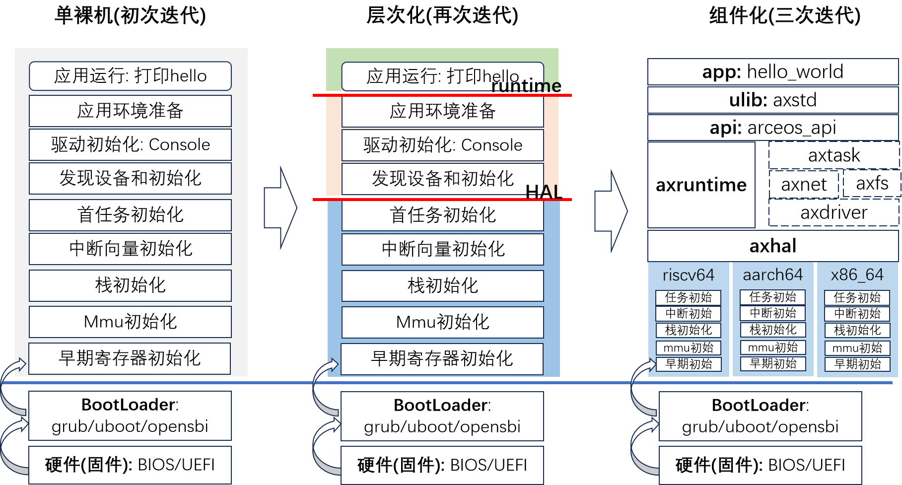示例流程（riscv64）
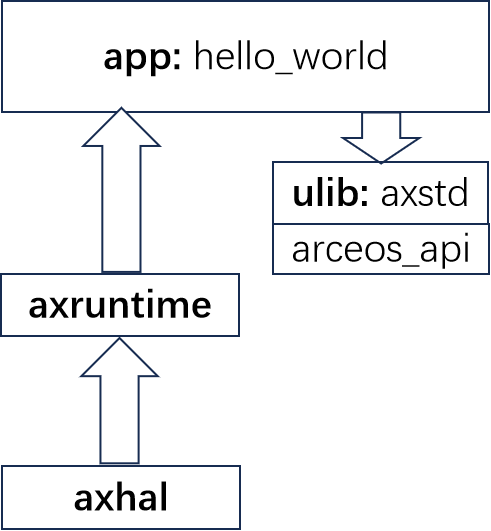引导过程示例: axhal(riscv64)

引导过程示例: axruntime
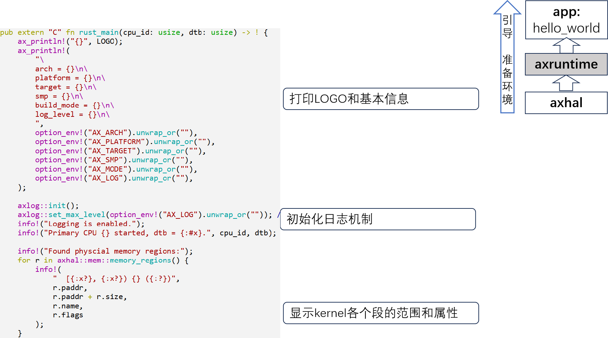 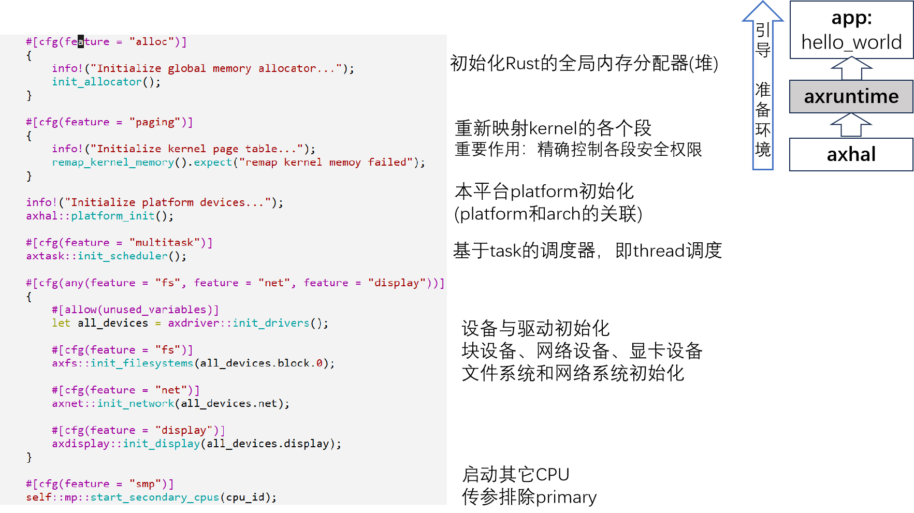 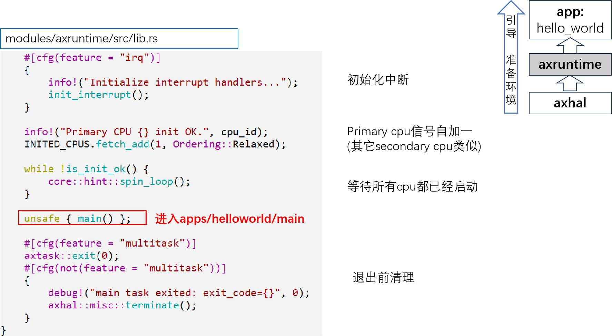app引导完成转入运行
应用启动，并基于运行环境提供的各种功能，完成自身的逻辑计算。对于 Helloworld，仅仅需要借助 ulib 中 axstd::println 完成打印输出。
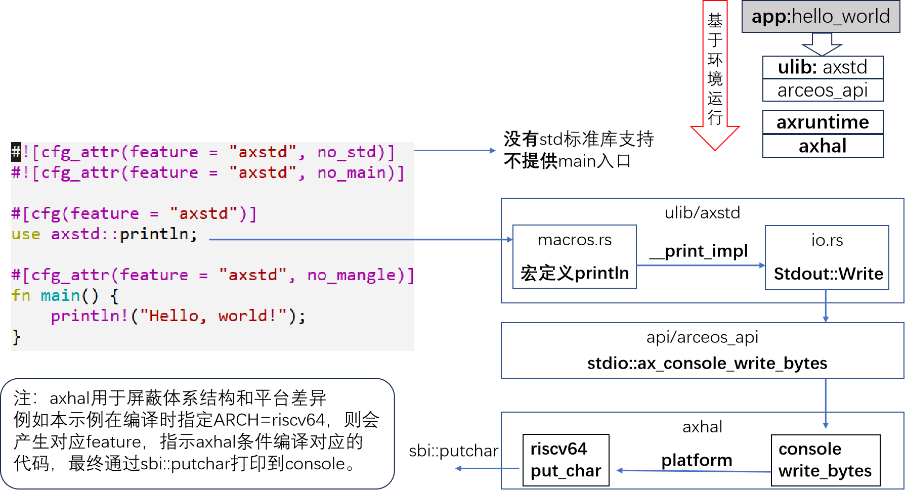日志级别控制与 features
在编译并运行 helloworld 时，可以指定 LOG 环境变量，以输出不同级别的日志。
make LOG=info run
这是通过 features 传递，改变 kernel 行为的具体方法。可以通过三种方式指定 features：
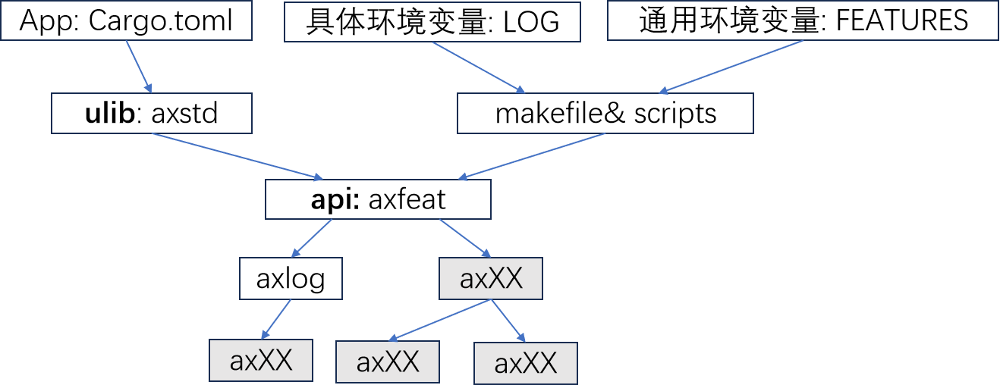附录 相关组件
-
axhal：- 模块源码位置：modules/axhal
- 模块描述： ArceOS 的硬件抽象层，负责为不同操作平台提供统一的 API。它为指定的操作平台进行引导和初始化过程，并在硬件上提供有用的操作。当前主要支持 pc-x86
、qemu-virt-riscv、qemu-virt-aarch64` 等平台。
-
axruntime：-
模块源码位置：modules/axruntime
-
模块描述：在进入应用程序的 main 函数之前执行一些初始化操作， 根据所选择的 feature 执行相对应的初始化过程。
-
本章实践与总结
练习
实验
题目：仿照println宏，增加一个新的宏println_prefix
要求：只能修改ulib/axstd/src/macros.rs，执行verify脚本验证a0通过。
预期输出：
Hello, world！
Stdout: Hello, world！[2]
[ArceOS Tutorial]: A0 okay!
提示：无。
总结
v0.1 建立最基本的框架：核心组件axhal、axruntime、api、ulib以及上层应用组件。
后续版本在该基本框架的基础上，通过扩展功能组件(虚线部分)，扩展OS能力特性。
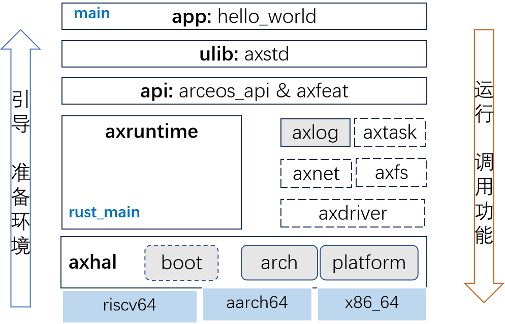内存管理
目标
- 物理内存布局
- 分页功能
- 内存分配框架和初始化
- 内存分配算法 tlsf, buddy, slab。
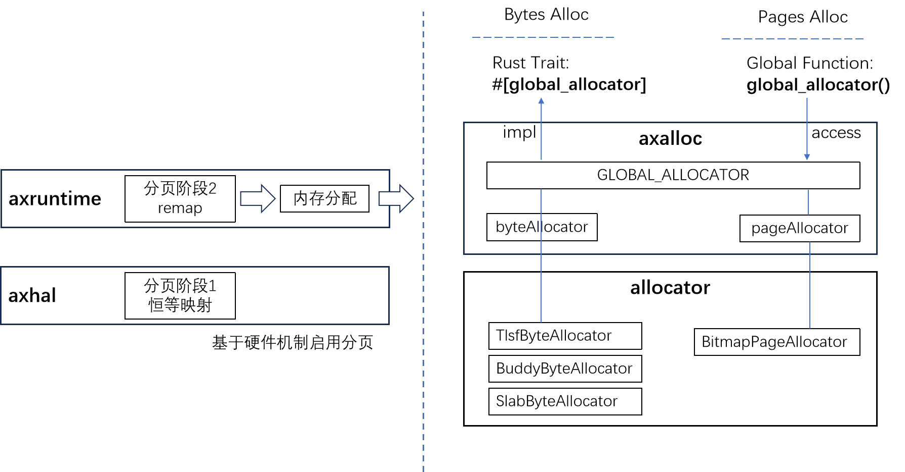
设计与实现
物理内存布局

分页 – 功能抽象和对应组件

分页启用分两个阶段：早期启用(必须)和后期重建映射(可选) 。
分页阶段1 – 早期启用(必须)
机制
内核启动的早期，采用规定的恒等映射方式。但是只映射一部分物理空间。
目标：完成Paging切换后，建立从虚拟空间0xffff_ffc0_8000_0000 ~ 0xffff_ffc0_8000_0000到物理空间0x8000_0000~0xC000_0000 的映射，范围1G。
两步完成Paging切换：
- 恒等映射保证虚拟空间与物理空间有一个相等范围的地址空间映射(0x80000000~0xC0000000)。切换前后地址范围不变，但地址空间已经从物理空间切换到虚拟空间；
- 给指令指针寄存器pc，栈寄存器sp等加偏移，在图中该偏移是0xffff_ffc0_0000_0000。如此在虚拟空间执行平移后，就完成到最终目标地址的映射。

代码示例

BOOT_PT_SV39使用的是LDS定义布局时，直接预留的一页，所以不用额外内存分配。

初始化根页表BOOT_PT_SV39，只有一级，即每个页表项直接映射到1G的地址空间。1G = 230 因此pgd_idx = (VA>>30)&(512-1)0x8000_0000 >> 30，对应pgd_idx = 20xffff_ffc0_8000_0000 >> 30，只保留低9位，对应pgd_idx = 0x102物理页帧号 = 物理地址 >> 12，故0x80000。
分页阶段2 – 重建映射(可选)
机制
重建映射的意义：
- 管理更大范围的地址空间
- 分类和权限的粒度控制更加细致
BOOT_PT_SV39使用的是LDS定义布局时，直接预留的一页，所以不用额外内存分配。

代码示例

内存分配
接口、框架与算法

接口和数据结构

框架初始化


算法组件接口


内存分配算法
TLSF (Two-Level Segregated Fit)
两级 bitmap+List 管理空闲块
bitmap 第一级 First Level：每一位对应一个范围的内存块，示例中分别对应24 ~ 231。1表示空闲。图中两个1。
bitmap 第二级 Second Leve：有几位就表示几等分。例如， 2^6^ 表示 64~127，然后进行 4 等分，就是 64~79, 80~95, 96~107, 108~127，每一位对应一个范围，同样1表示空闲。
然后就能找到包含对应范围大小的空闲块链表List。链表耗尽或者新建时，对应维护两级bitmap。

Buddy
分配单元 Unit：一般不会采用1字节，通常8，16，32…字节。
分配：寻找匹配 alloc 需要（order）的最小块如果 order 大于目标，则二分切割，直至相等，每级剩余的部分挂到对应的 Order List；
释放：查看是否有邻居空闲块，有则尽可能向高 Oder 合并，直至无法合并，挂到 OrderList。

Slab
结构：
- 通过OrderList维护一系列Slab
- Slab维持一个空闲的block链表
分配：
从block空闲链表中弹出一个block。依靠BuddyAllocator提供内存分配支持，初始时以及block不足时，从BuddyAllocator申请，分割block后加入block空闲链表。
释放：
放回block空闲链表。

附录 相关组件
-
allocator：- 模块源码位置：crates/allocator
- 模块描述：
allocator模块提供了一个统一的接口，用于实现不同类型的内存分配器算法。该模块共包括三种不同类型的分配器：字节粒度内存分配器 (ByteAllocator)、页粒度内存分配器 (PageAllocator) 和唯一 ID 分配器 (IdAllocator)。每种分配器都有其特定的实现方式，例如BuddyByteAllocator和SlabByteAllocator对应的是字节粒度内存分配器，而BitmapPageAllocator对应的是页粒度内存分配器。这个模块使得不同的内存分配器可以更加灵活地组合和替换，实现更加高效和可靠的内存管理功能。
本章实践与总结
练习
待完善
实验
题目：针对字节内存分配，增加一个新的内存分配算法
要求：只能修改 crates/allocator/src/simple.rs，修改其中的数据结构和填充相关函数，执行 verify 脚本验证 a1 通过。
提示：
- 可以参考现有的 tlsf，slab 等算法；或者其它了解的算法。
- 提供一个 Bump 算法(最简版本)，供参考。
- 关键数据成员: next 指针总是指向空闲区开始位置，计数 allocations 记录已经分配的次数；
- 申请内存: 移动 next 位置指针， allocations 加一，返回移动前的 next；
- 释放内存: allocations 减一。如果归零，复位 next 到起始位置；
- 需要检查，分配和释放是否越界。

总结
v0.2 内存管理框架与功能：
-
内存分配功能
- 内含两类分配器，字节分配器和页分配器；
- 框架与算法分离，松耦合支持多种内存分配算法。
-
分页功能
启动早期基于静态恒等映射完成分页切换，如果指定 paging feature 则会在启动后期重新建立范围更大，权限控制更细的映射。

任务调度
目标
- 任务和任务状态
- 通用调度框架和初始化
- 系统内置任务idle, main和gc
- 协作式调度机制和示例
- 抢占式调度与协作式区别
- 抢占式调度框架实现
- 抢占式调度算法：sched_rr & sched_cfs
概念
任务： 被调度的对象，具有独立工作逻辑。
调度： 资源相对于使用者通常是不足的，调度就是用来协调每个请求对资源的使用的方法。
任务调度： 协调可执行任务对 CPU资源 的使用。
协作式调度： 任务之间通过“友好”协作方式分享CPU资源。具体的，当前任务是否让出和何时让出CPU控制权完全由当前任务自己决定。
抢占式调度： 调度器依据策略，可以打断当前任务的执行，移交CPU执行权给当前“更”有资格 的任务。抢占机制的根本保障是系统定时器。
5.1 建立通用调度框架
5.1.1 任务
一、任务状态

二、任务数据结构

5.1.2 通用调度框架和初始化
一、通用调度框架
框架支持协作式和抢占式调度。其中，标红的两处：
- 当前任务是操作的焦点；
- TaskContext.switch_to 是任务切换的关键。

二、接口 - 主要调度API
接口公开的是 runqueue 的对应方法：
- spawn&spawn_raw：产生一个新任务，加入 runqueue，处于 Ready；
- yield_now (协作式调度的关键)：主动让出 CPU 执行权；
- sleep&sleep_until：(1)睡眠固定的时间后醒来；(2)在 timers 定时器列表中注册，等待唤醒；
- exit：当前任务退出，标记状态，等待 GC 回收。
三、调度框架初始化

四、核心算法：context_switch
任务上下文 Context：保存任务状态的最小的寄存器状态集合。
下图是理解上下文切换的两个角度：

五、上下文 Context 包含寄存器:
- ra:：函数返回地址寄存器，这个切换实现了任务执行指令流的切换；
- sp：任务即线程，这个是线程栈；
- s0~s11：按照 riscv 规范，callee 不能改这组寄存器的信息，所以需要保存。

5.1.3 系统内置任务idle, main和gc

5.2 协作式调度机制与示例
5.2.1 协作式调度算法 FIFO 机制
-
任务按照先入先出的顺序被 CPU 执行；
-
当前任务一旦获得执行权，就会一直执行；
-
只有两种情况下，其它任务才能获得执行机会：
-
当前任务执行完成后退出；
-
当前任务主动调用 yield_now 让出执行权。
-
5.2.2 协作式调度算法FIFO实现
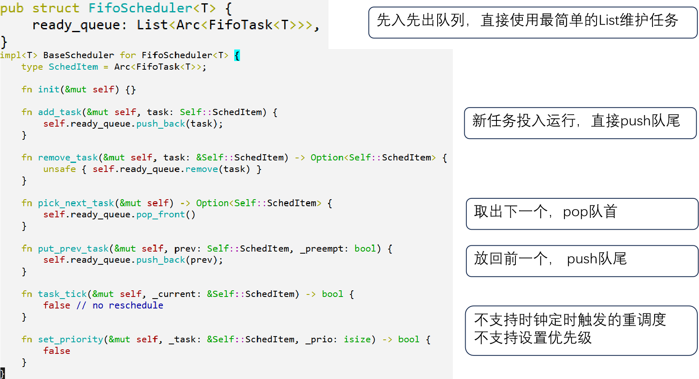5.3 抢占式调度机制与示例
5.3.1 抢占式调度与协作式在框架上的区别
抢占式调度在协作式自主 yield 的基础上，通过加入时钟中断，确保个别任务不会长期不合理的占据 CPU。
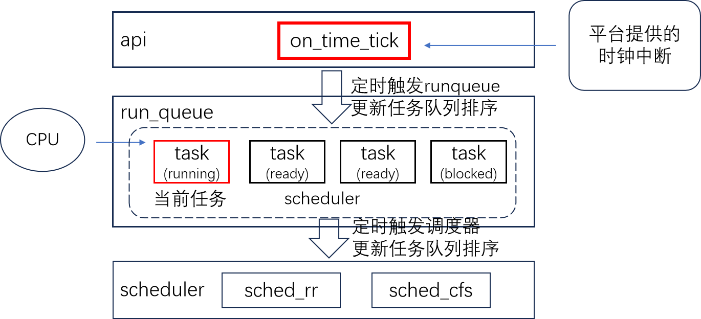5.3.2 时钟中断与抢占式调度
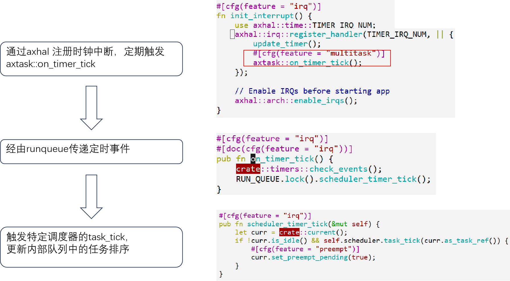5.3.3 抢占式调度算法 ROUND_ROBIN
在协作式调度 FIFO 的基础上，由定时器定时递减当前任务的时间片，耗尽时排到队尾，如此完成各个任务的循环排列。
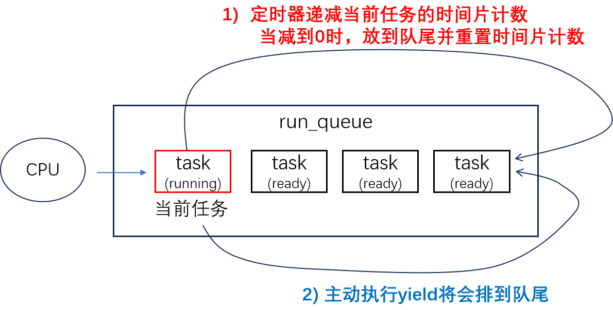 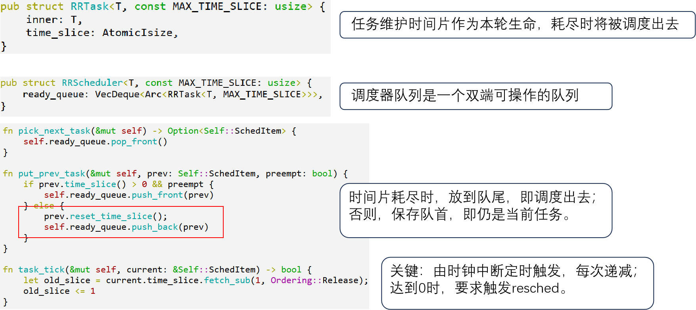注👉 注意，各个 scheduler 操作的核心目标都是当前任务。
5.3.4 抢占式调度算法 CFS(Completely Fair Scheduler)
当前 vruntime 最小的任务就是当前任务。计算公式： $$ vruntime = init_vruntime + (delta / weight(nice)) $$ 系统初始化时，init_vruntime, delta, nice 三者都是 0
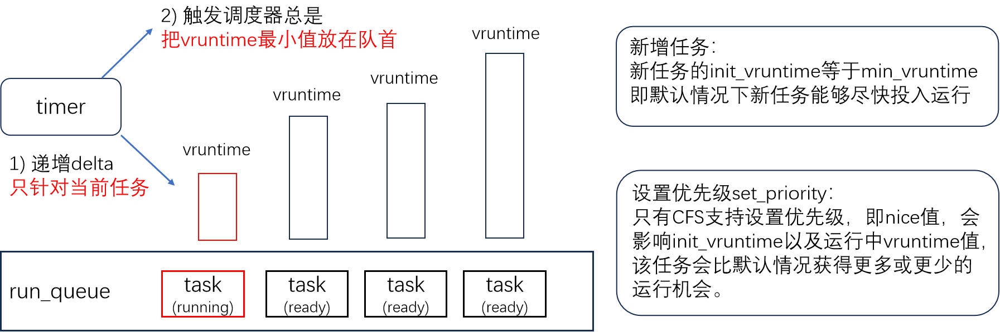 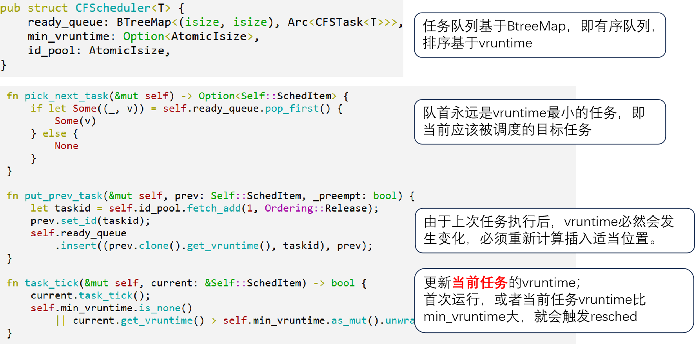 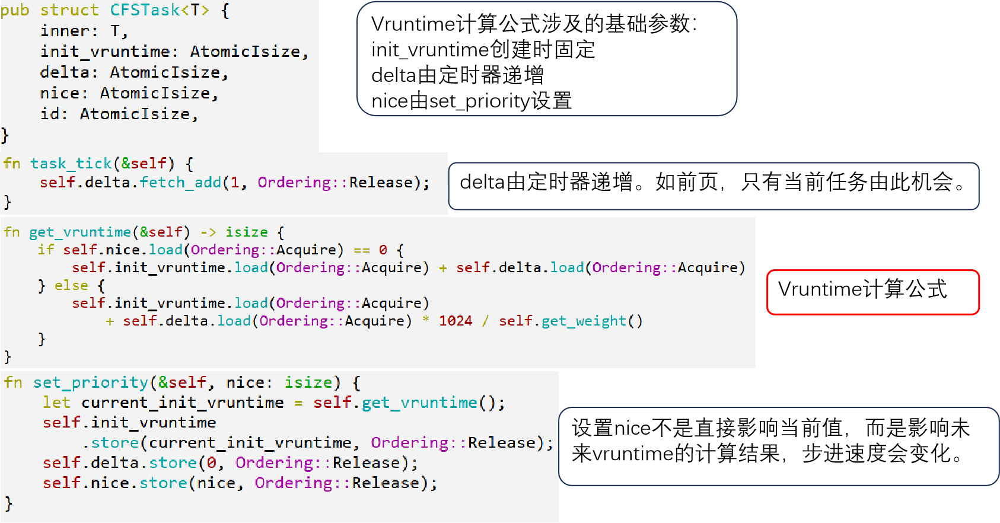5.4 本章实践与总结
5.4.1 练习
待完善
5.4.2 实验
实验1
题目：把协作式调度算法改造为抢占式调度算法。
要求：只能修改 crates/scheduler/src/simple.rs，修改其中的数据结构和填充相关函数，执行 verify 脚本验证通过。
提示：
- 可以参考现有的 sched_rr 或 sched_cfs 等算法；或者其它了解的算法。
- 重点是发挥 task_tick 方法的作用。
实验2
题目：支持 ramfs 的 rename 操作。
要求：只能修改 crates/axfs_ramfs/src/dir.rs，增加相关函数，实现部分 trait，执行 verify 脚本验证通过。
提示：无
5.4.3 总结
通过本章学习，建立了基础的调度框架，引入三个系统任务辅助任务管理。目前可以基于最简单的协作式和抢占式调度算法，支持多任务。
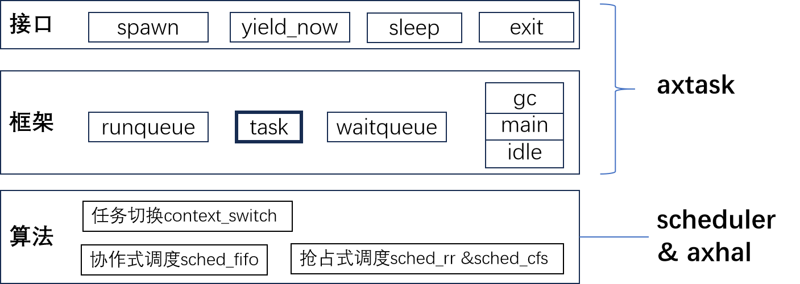注👉
注意，ArceOS 的抢占式调度与 Linux 所说的”抢占”有概念上的区别。
设备与驱动
目标
- 设备管理结构
- 设备发现与初始化
- 中断机制与初始化

设计与实现
设备管理框架
AllDevices 管理系统所有的设备，为上层的子系统如文件系统 FS、网络协议栈 NET 提供访问服务。
三种设备类型：

设备发现与初始化过程

基于总线发现设备- qemu 平台示例

virtio 设备的 probe 过程
-
qemu 模拟器基于命令行产生设备：
-device virtio-blk-device,drive=disk0 -drive id=disk0,format=raw,file=disk.img -
qemu 将设备 mmio 地址区域映射到 Guest 中；
qemu-virt 平台默认有 8 个区域槽位，通常只有部分会形成映射，其它处于未映射状态，即表现为空设备；
-
virtio-mmio 驱动逐个发请求区探查这些区域槽位；
- 对应映射设备响应请求，返回本设备的类型 ID；
- 没有映射的槽位返回零，表示空设备。
-
virtio-mmio 驱动把 probe 结果报告上层。

virtio 驱动基本模型
virtio 驱动和 virtio 设备交互的两条路：
- 主要基于 vring 环形队列：本质上是连续的 Page 页面，在 Guest 和 Host 都可见可写；
- 中断响应的通道：主要对等待读取大块数据时是有用。

中断机制与初始化（以 riscv64 为例）

块设备驱动 - BlockDriver

块设备驱动 Trait - BlockDriverOps

本章实践与总结
练习
待完善
实验
待完善
总结
待完善
第七章 文件系统
设计与实现
文件系统 - FileSystem
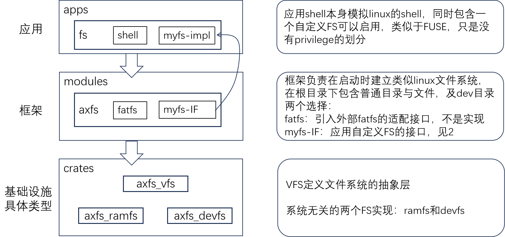文件系统的抽象与对应数据结构
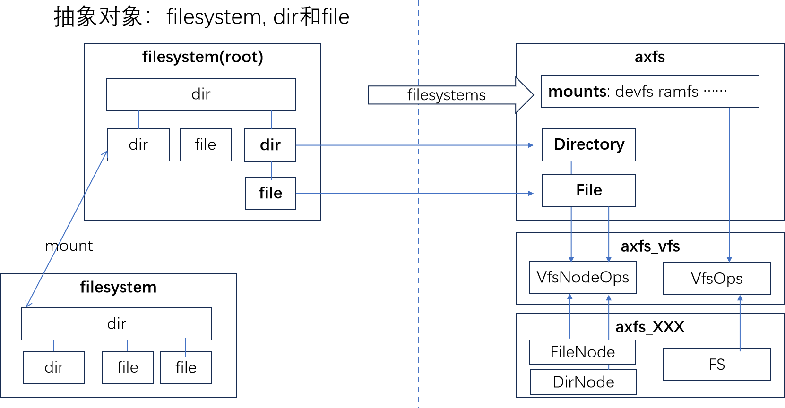文件系统节点的操作流程
第一步：获得 Root 目录节点；
第二步：解析路径，逐级通过 lookup 方法找到对应节点，直至目标节点；
第三步：对目标节点执行操作。
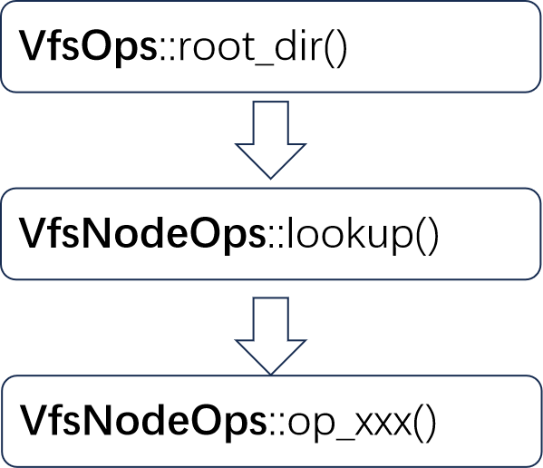本章实践与总结
练习
待完善
实验
待完善
总结
待完善
第八章 网络
目标
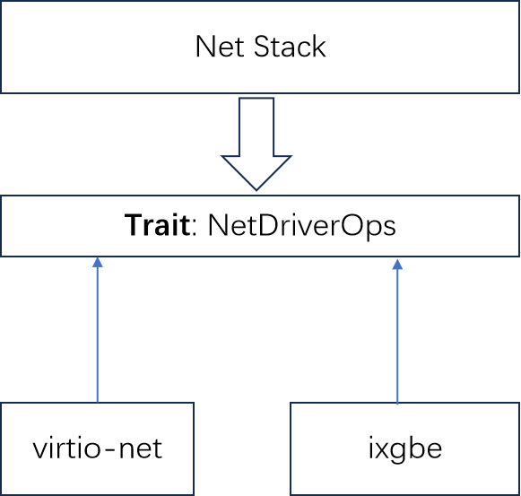设计与实现
网卡过滤驱动
在驱动链中插入一级驱动，向上提供与下层一致的接口，向下为上层传递请求。通常作为安全用途：监控、审计甚至阻断。
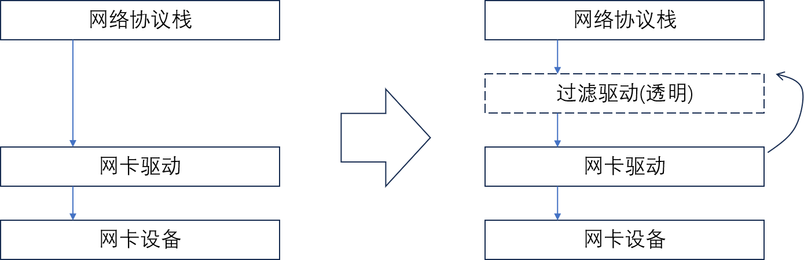网络协议栈 - NET
目前基于对 smoltcp 的封装。
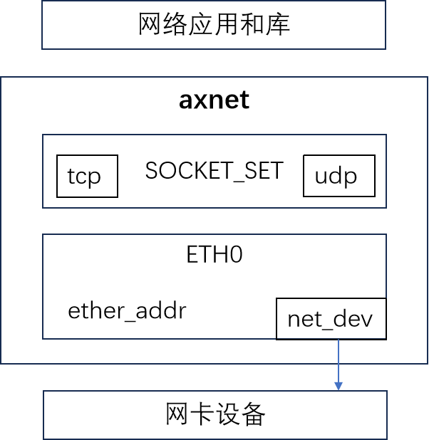本章实践与总结
练习
待完善
实验
题目：实现针对 virtio-net 驱动的过滤驱动，监控发送和接受的数据包。
要求：只能修改 modules/axdriver/src/filter.rs，执行 verify 脚本验证通过。并且屏幕输出如下：
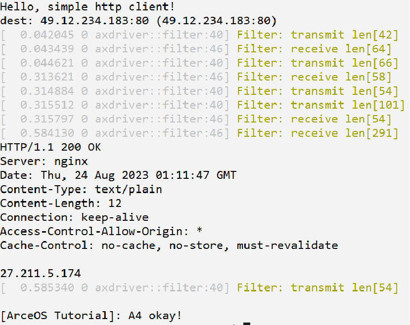提示： 过滤驱动用 warn! 打印监控到的收发数据。
-
对 transmit
warn!("Filter: transmit len[{}]", ptr.packet_len()); -
对 receive
warn!("Filter: receive len[{:?}]", b.packet_len());
总结
待完善
第九章 应用支持库- axstd & axlibc
支持 Rust 和 C 两种应用库。
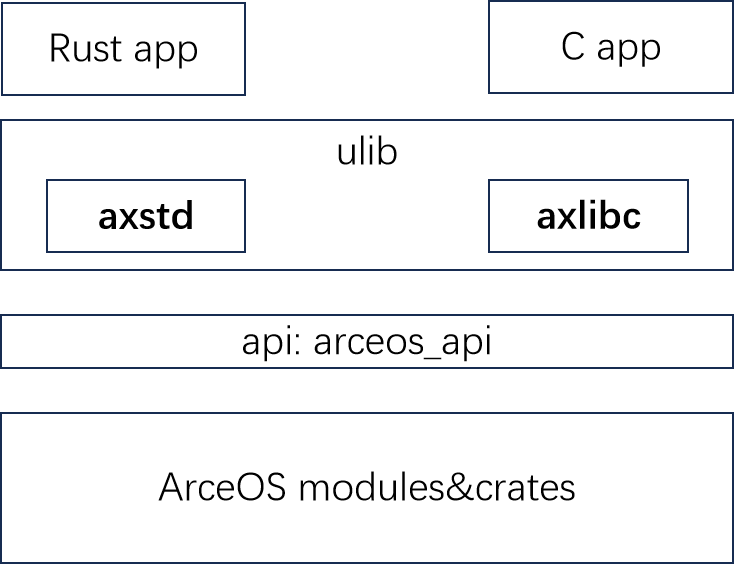Rust 库 - axstd
参照官方 Std 的接口及目录设置，用 ArceOS 对应的功能匹配。
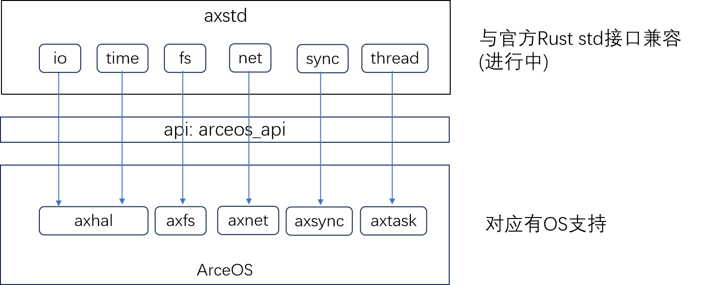C 库 - axlibc
首先把 ArceOS 主体编译为静态库，最后与应用以及 axlib 完成链接。
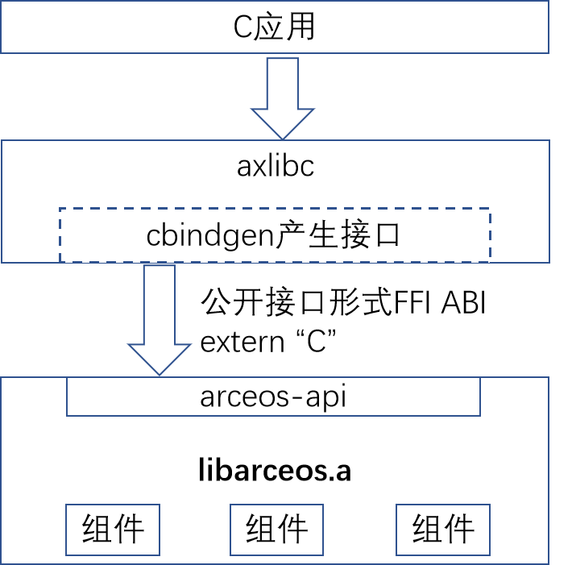axstd & axlibc 方式的对比
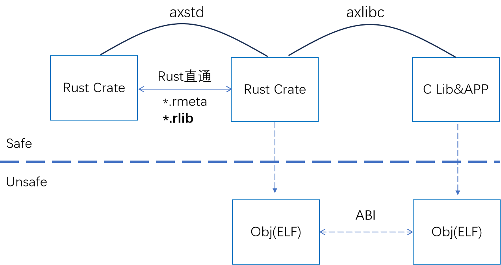第十章 多核支持 - SMP
多个 CPU (核)共享同一个任务调度队列，实现任务并发执行。SpinLock 自旋锁对任务队列提供互斥保护。
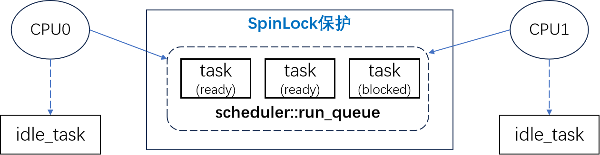PerCPU 作用
专属于 CPU 的本地存储区域，获得更高的本地缓存效率。
类比：
- TLS: thread-local-storage
- PerCPU: cpu-local-storage
第十一章 总结和展望
设计思想
组件化方法构造 OS
以组件库为基础，通过组合组件方式构造各种特性的 OS。即研究一种基于组件构造 OS 的"工厂式"方法。
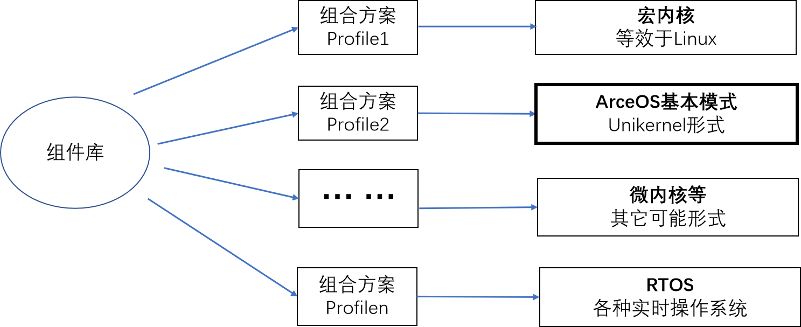操作系统相关与无关
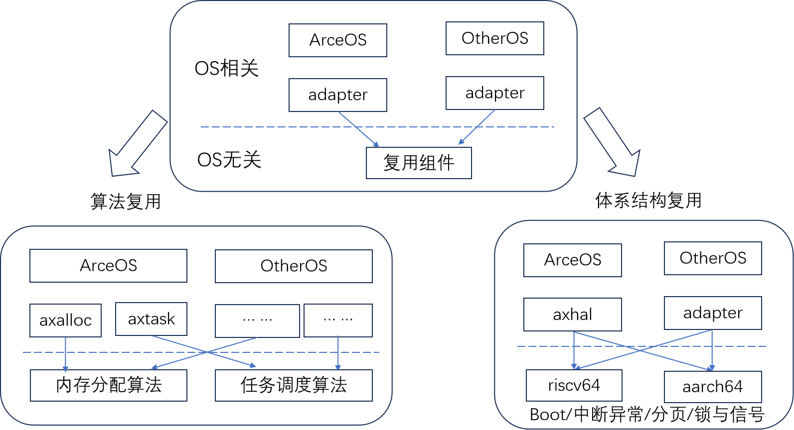主干组件与功能组件
-
通过横向对比各种 OS 实现
- 区分共性的部分和个性的部分
- 区分相对固定的部分和相对易变的部分
共性固定是主干框架；个性易变是功能组件
-
主干框架
- 主干组件：按照执行顺序切分为一系列阶段，并且应当是各种 OS 框架的最大集合。每个阶段根据情况对应有效主干组件或者是空实现组件。
- 主干组件决定干什么？它们根据策略在功能组件中选择适当组件去完成工作。
-
功能组件
- 功能组件决定怎么干?
- 同一功能组中的各个组件是互备关系，可以互相替换。
面向应用
- 以应用为中心：整个系统服务于应用和支撑应用；
- 依赖组件集合最小化：满足应用运行前提下，无冗余组件。
构造过程、脚本和测试
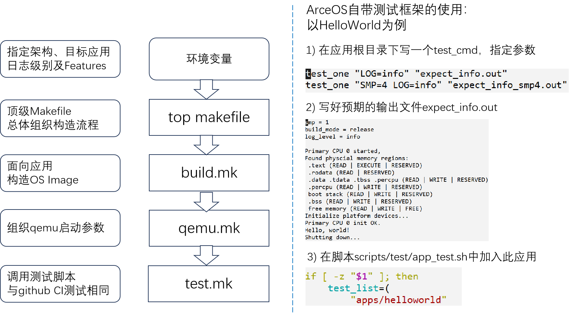未来发展
异步
研究的基础
- IO 密集型是 AIoT 的典型场景，最适合采用异步
- ArceOS 是应用为中心的 UniKernel OS，相对 Linux 等通用宏内核或微内核，其专用性更适应AIoT 特点
- Rust语言级支持异步，即 async/await
研究的意义
面向 AIoT 的 IO 密集型场景，以组件化方式构建以应用为中心的 UniKernel OS，并发挥 Rust 对异步的内置支持能力。这种方案有可能比基于传统 OS 建立的方案，具有更高的运行效率和更小的Image。
需要解决的问题
- Tokio 本身的改造，提升协程与线程的协作效率；
- Rust 标准库支持 ArceOS 后端，编译时支持 ArceOS 这个 Target；
- 改造 mio&socket2，支持 ArceOS 后端；
- 改造网络协议栈这个组件，提升并发性；
- 实现硬件平台驱动，重点支持 10G 网卡和中断。
异步环境下，存在两类调度实体：
- 协程(tokio 中称 task)，基于 Rust 语言的异步特性 async/await，有专门的 task 调度。
- 线程，即 OS 的线程。负责执行若干个 task 协程。并且具有特定条件下，steal task 的能力。
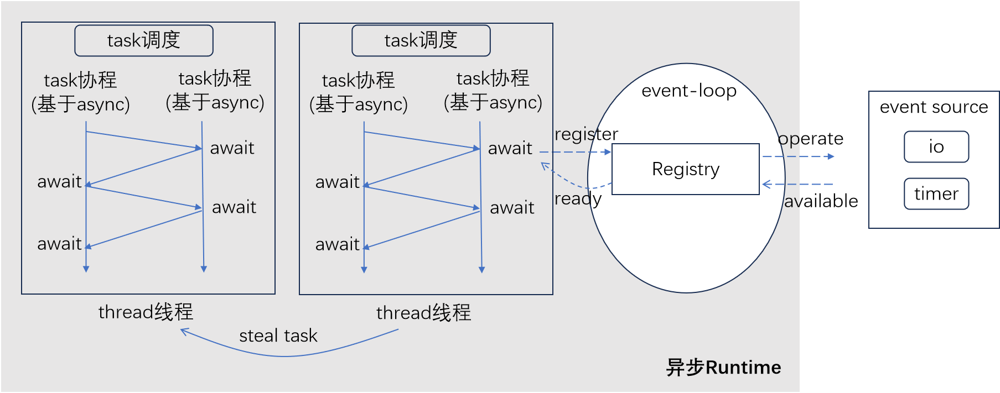
研究目标
在 ArceOS 平台上，协程与线程的高效协同。涉及调度策略、协程锁与线程锁，消息交换和共享等优化。
平台移植
树莓派 arm 平台的移植参考。arm 体系结构已存在，基本不用改；platform 增加对应目录，大部分代码可复用 aarch64_common 中内容。
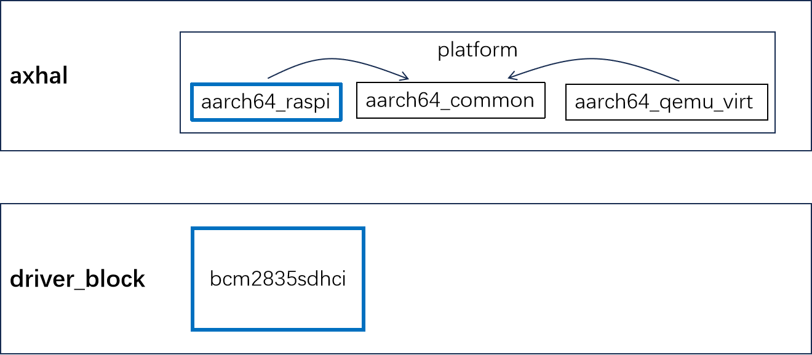宏内核/微内核
- 从单地址空间到多地址空间；
- 从单内核态到内核态+用户态；
- 引入系统调用层以及进程相关的功能。